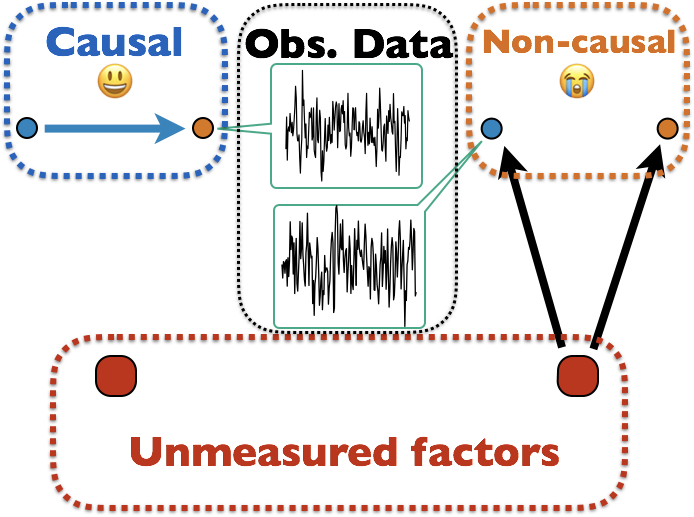
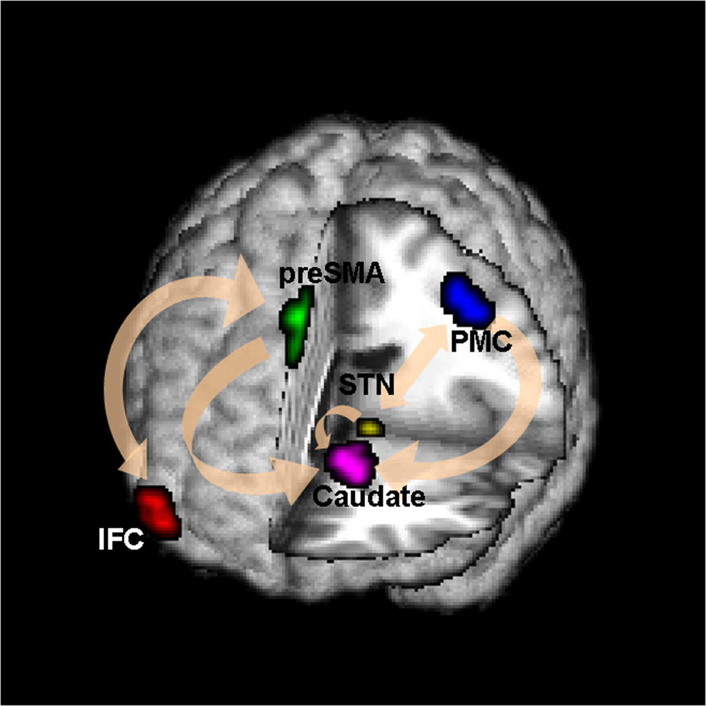
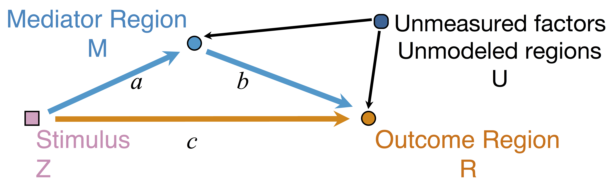

Estimating Brain Pathways Using Large-scale Multilevel Models
Xi (Rossi) LUO
Department of Biostatistics
Center for Statistical Sciences
Computation in Brain and Mind
Brown Institute for Brain Science
Brown Data Science Initiative
ABCD Research Group

June 25, 2017
Funding: NIH R01EB022911, P20GM103645, P01AA019072; NSF/DMS (Big Data) 1557467
Coauthor

Yi Zhao
(Brown PhD 2017, starting postdoc at JHU Biostat)
This work received the 2015 ENAR distinguished paper award.
Brown University
Math Problem:
Infer Causality from Observational Data Only

Many unmodeled factors: vascular, respiratory, mind wandering, ...
Stop/Go Task fMRI


- Task fMRI: performs tasks under brain scanning
-
Randomized stop/go task:- press button if "go";
- withhold pressing if "stop"
- Not resting-state: "rest" in scanner

fMRI data: blood-oxygen-level dependent (BOLD) signals from each
Raw Data: Motor Region

fMRI Studies
Sub 1, Sess 1

Time 1
2
…
~300
⋮
Sub i, Sess j
…
⋮
Sub ~100, Sess ~4
…
Our data: 96 subjects × 4 sessions × 100 trials × 2 regions
Question: can "
Brain Networks
Functional/Effective Connectivity
Network Model with Stimulus

Goal: quantify effects stimuli → preSMA → PMC regions Duann, Ide, Luo, Li (2009). J of Neurosci
Model
Mediation Analysis and SEM
 $$\begin{align*}M &= Z a + \overbrace{U + \epsilon_1}^{E_1}\\ R &= Z c + M b + \underbrace{U g + \epsilon_2}_{E_2}, \quad \epsilon_1 \bot \epsilon_2\end{align*}$$-
Indirect effect: $a \times b$; Direct effect: $c$ - Correlated errors: $\delta = \cor(E_1, E_2) \ne 0$ if $U\ne 0$
Mediation Analysis in fMRI
- Mediation analysis (usually assuming $U=0$)Baron&Kenny, 86; Sobel, 82; Holland 88; Preacher&Hayes 08; Imai et al, 10; VanderWeele, 15;...
- Parametric Wager et al, 09 and functional Lindquist, 12 mediation, under (approx.) independent errors
- Stimulus $\rightarrow$ brain $\rightarrow$ user reported ratings, one brain mediator
- Assuming $U=0$ between ratings and brain
- Multiple mediator and multiple pathways
- Dimension reduction by arXiv1511.09354Chen, Crainiceanu, Ogburn, Caffo, Wager, Lindquist, 15
- Pathway Lasso penalization Zhao, Luo, 16 (Session #159, Wed 11:45am)
- This talk: causal estimation under $U\ne 0$ (its effect size $\delta \ne 0$) when modeling two brain regions
Existing Approaches for $\delta \ne 0$
- Assuming $\delta=0$
- Assumption "too strong" for most cases Imai et al, 10
- Sensitivity plot: "guessing" $\delta$
- Simplify models: e.g. $c=0$ via instrumental variable
- Adjust (e.g. motion) if possible Sobel, Lindquist, 14
- Use Bayesian prior or regularization
Positive or negative effects depending on subjective choice of $\delta$
Method
- Recall 3-level data: subjects, sessions, trials
-
Correlated mediation model for trials, mixed model for mediation effects among higher levels- Special case: 2-level data, mixed becomes anova
- We will optimize the multilevel likelihood $$\underbrace{\sum_{\mbox{Sub }i} \sum_{\mbox{Sess }k}\ell(\mbox{brain activities in trials} | A_{ik}, B_{ik}, C_{ik}, \Theta_{ik})}_{\mbox{first level likelihood}} \\ + \underbrace{\sum_i \ell(A_{i1},\dotsc,A_{iK}, B_{i1},\dotsc | A, B, C, \Theta)}_{\mbox{second and third level likelihood}}$$
Challenges
- Unmeasured confounding and causal inference
- Usually impossible in many other statistical models
- Prove our model is identifiable or our multilevel likelihood has a unique maximum
- Usually the likelihood is mutlimodal in many other cases
- Prove our MLE is unbiased and consistent under minimal assumptions
Our Level-1 Model
- Bivariate
single-level model $$\begin{align*}\begin{pmatrix}M & R\end{pmatrix} & = \begin{pmatrix}Z & M\end{pmatrix} \begin{pmatrix}a & c\\ 0 & b \end{pmatrix} + \begin{pmatrix}E_{1} & E_{2}\end{pmatrix}\\ (E_1, E_2) & \sim MVN(\boldsymbol{0}, \boldsymbol{\Sigma}) \quad \boldsymbol{\Sigma}=\begin{pmatrix}\sigma_{1}^{2} & \delta\sigma_{1}\sigma_{2}\\ \delta\sigma_{1}\sigma_{2} & \sigma_{2}^{2} \end{pmatrix} \end{align*}$$ - Estimate $(a,b,c,\boldsymbol{\Sigma})$ via ML (a lot of handwaving)
- We solve an optimization with constraints
- Different than running two regressions
Causal Interpretation
- Prove causal using potential outcomes Neyman, 23; Rubin, 74
- Causal inference intuition $$Z \rightarrow \begin{pmatrix} M \\ R \end{pmatrix}$$
- Others assume (e.g. randomized brain stimulation) $$r_{i}\left(z_{i}^{\prime},m_{i}\right)\bot m_{i}\left(z_{i}\right)|Z_{i}=z_{i}$$
- We do
not need this assumption when we can estimate $\delta$
Theory
- Theorem:
Given $\delta$, unique maximizer of likelihood, expressed in closed form - Theorem:
Given $\delta$, our estimator is root-n consistent and efficient - Bias (and variance) depends on $\delta$
"Tragedy" of ML

- Likelihood provides
zero info about $\delta$ - Cannot simply apply priors on $\delta$
Two different models generate the same single-trial BOLD activations if only observing $Z$, $M$, and $R$
without measuring $U$Our Higher Level Models
- Cannot identify $\delta$ from single sub and single sess (see our theorem)
- Intuition: leverage complex data structure to infer $\delta$
Some Details
- Level-1 model for each sub and each sess
$$\begin{pmatrix}{M}_{ik} & {R}_{ik}\end{pmatrix}=\begin{pmatrix}{Z}_{ik} & {M}_{ik}\end{pmatrix}\begin{pmatrix}{a}_{ik} & {b}_{ik}\\ 0 & {c}_{ik} \end{pmatrix}+\begin{pmatrix}{E}_{1_{ik}} & {E}_{2_{ik}}\end{pmatrix}$$ - Limited variability in $\delta$ across sub/sess
- Random effect model cf AFNI, FSL, SPM, and etc $$\begin{pmatrix}{A}_{ik}\\ {B}_{ik}\\ {C}_{ik} \end{pmatrix}=\begin{pmatrix}{A}\\ {B}\\ {C} \end{pmatrix}+\begin{pmatrix}\alpha_{i}\\ \beta_{i}\\ \gamma_{i} \end{pmatrix}+\begin{pmatrix}\epsilon_{ik}^{{A}}\\ \epsilon_{ik}^{{B}}\\ \epsilon_{ik}^{{C}} \end{pmatrix}=b+u_{i}+\eta_{ik}$$
Algorithm 1: Two-stage Fitting
- Stage 1: fit $(\hat{A}_{ik}(\delta), \hat{B}_{ik}(\delta), \hat{C}_{ik}(\delta))$ for each $i$ and $k$ for varying $\delta$ using our step 1 single-level model
- Stage 2: Find $\hat{\delta}$ that $(\hat{A}_{ik}(\hat{\delta}), \hat{B}_{ik}(\hat{\delta}), \hat{C}_{ik}(\hat{\delta}))$ yields maximum likelihood for random effects model
- Small-scale computing
Theory for SEM and Confounding
Contributions: data-driven estimation of confounding and consistency proof for SEM
Alternative Likelihood under Our Framework
- Optimize all parameters in joint likelihood $$\begin{align*} &\sum_{i=1}^{N}\sum_{k=1}^{K}\log\Pr\left(R_{ik},M_{ik}|Z_{ik},\delta,b_{ik},\sigma_{1_{ik}},\sigma_{2_{ik}}\right)\quad \mbox{Data}\\ & + \sum_{i=1}^{N}\sum_{k=1}^{K}\log\Pr\left(b_{ik}|u_{i},b,\boldsymbol{\Lambda}\right)\quad \mbox{Subject variation}\\ & +\sum_{i=1}^{N}\log\Pr\left(u_{i}|\boldsymbol{{\Psi}}\right) \quad \mbox{Prior}\end{align*}$$
- Large computation: $5NK + 3N + 11 > 2000$ paras
Algorithm 2
Leverage conditional convexity to reduce computation
details in our paperSimulations
Method Comparison
- Single level models
- BKBaron, Kenny, 86: assuming $\delta = 0$
- CMA-$\delta$ (our single-level method): assuming $\delta = 0$
- Mixed effects multilevel models
- KKBKenny et al, 03: assuming all $\delta = 0$
- CMA-ts (ours): estimating $\delta$, two-stage fitting
- CMA-h, CMA-m (ours): estimating $\delta$, large-scale fitting
- Simulate data with varying $\delta$
Low bias for $\delta$
Low bias for effects
Our large-scale multilevel model
Bias can be large (100%) without estimating $\delta$
Real Data
Data
- Random stimuli and scalar activations for each trial
- Stimuli: go = press; stop = not pressing
- stop is expected to suppress motor area (PMC)
- 96 subjects × 4 sessions × 100 trials × 2 regions
- Temporal dependence removed using whitened data and single-trial beta deconvolutionWager et al, 08
Identifiability and Bias
Unique $\delta$ for ML
Estimates doubled
- Ours show stop directly suppresses PMC significantly while other methods fail to recover this
- Motion (part of $U$) correction decreases our $\delta$ estimate but do not change our causal estimates
Summary
- Leverage complex data for causal fMRI modeling
- Approach:
-
large-scale causal SEM - big multilevel data
-
machine learning/optimization
-
- Theory: identifiability, convergence, and computation
- Result: reduced bias and causal interpretation
Discussion
- Extensions: functional models, multiple pathwaysPathway Lasso, our arXiv 1603.07749, temporal 2017 JSM Mental Health Student Paper Award Section
- Manuscript: arXiv 1410.7217
- R package:
macc

c ausality